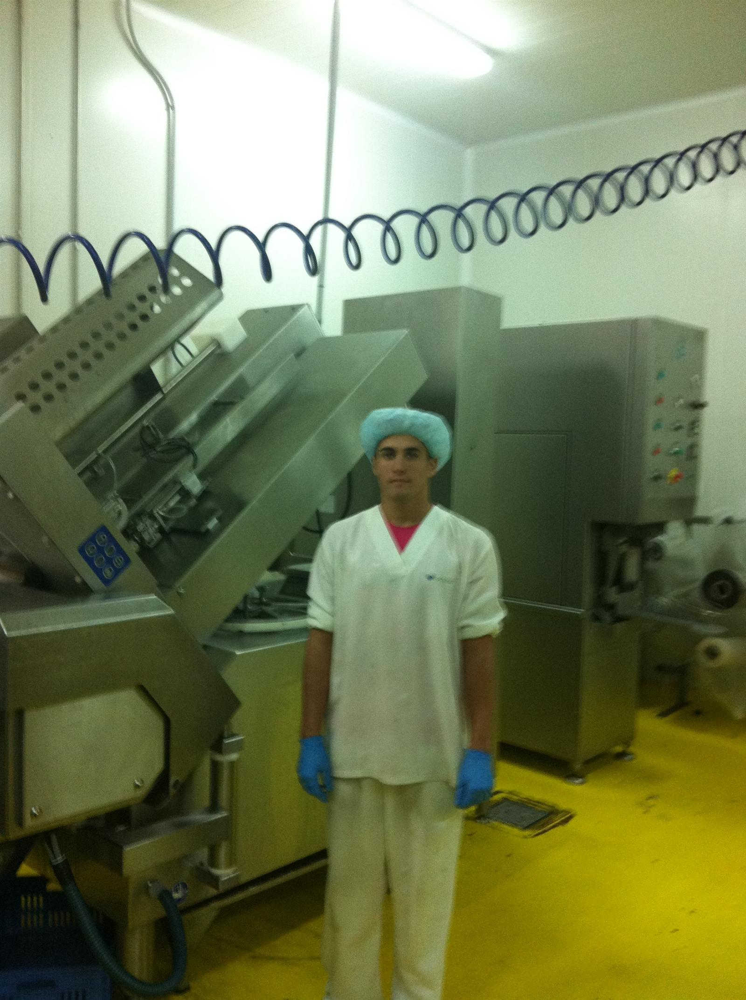
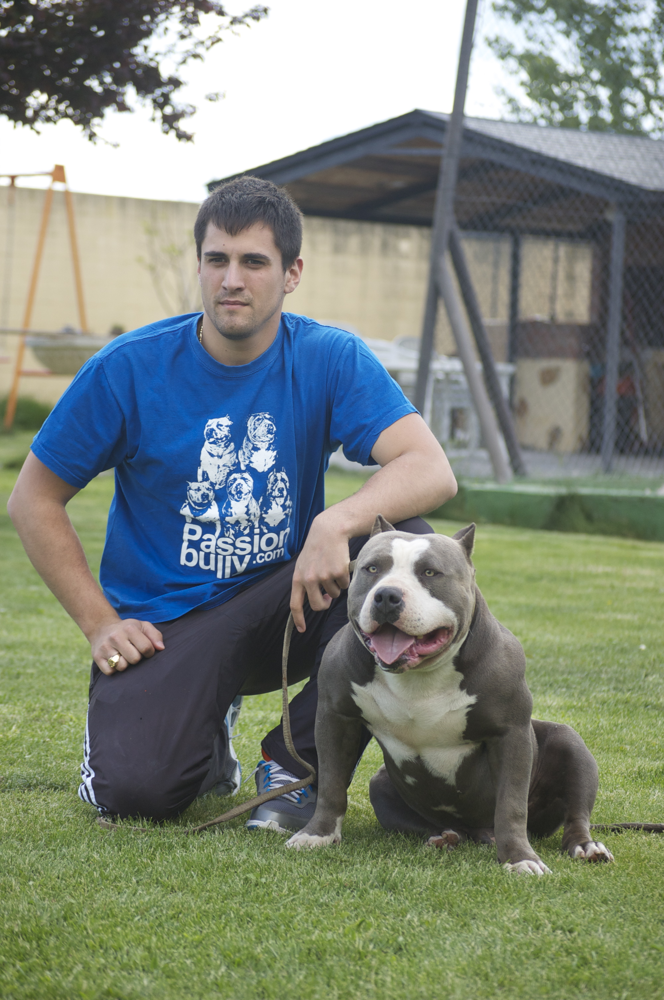
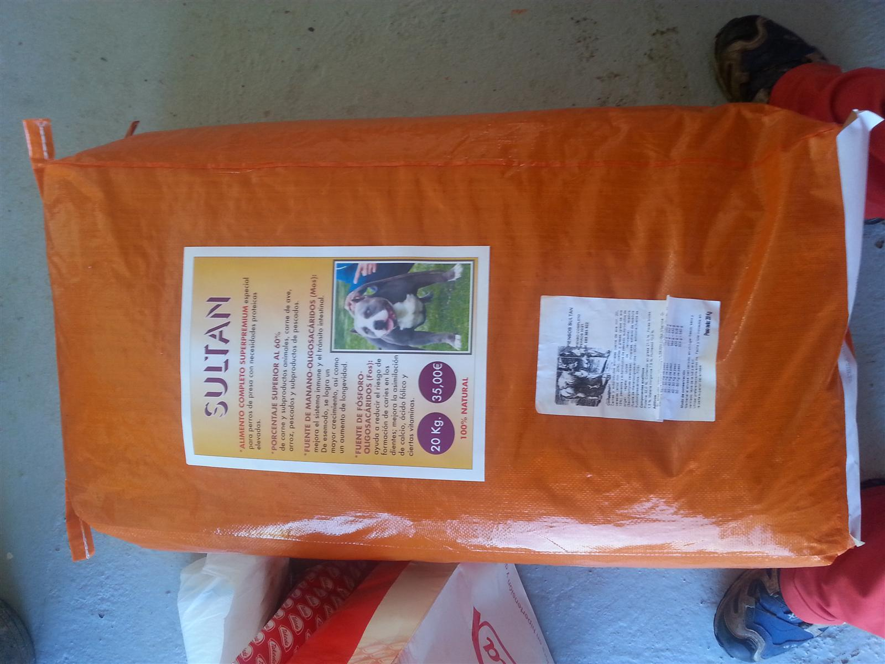
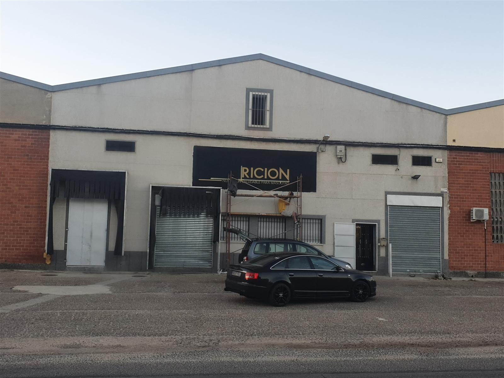
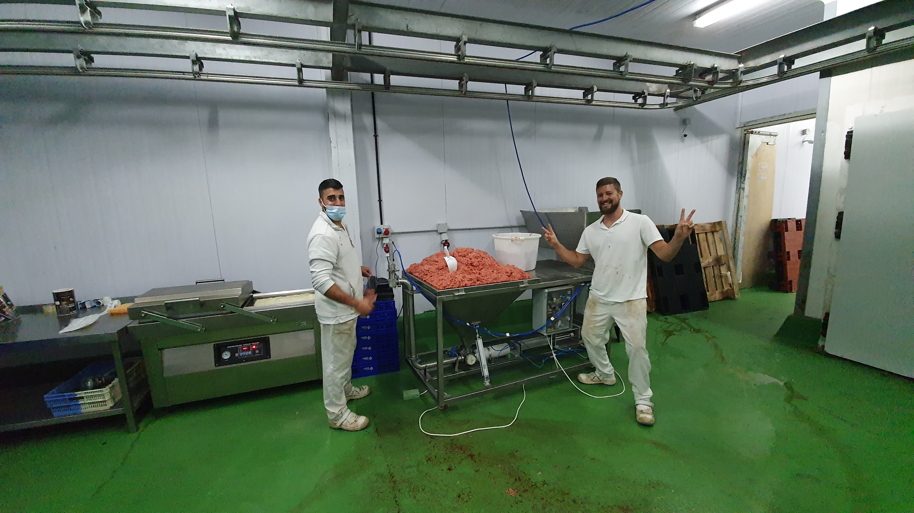

Más de una década construyendo
Lo que hoy es una fábrica industrial empezó en una cocina, con un vacuum sealer doméstico y las ganas de dar lo mejor a mis perros.
El origen
Con 16 años trabajo en una planta de producción de embutidos. Aprendo de primera mano cómo se fabrica la alimentación a escala industrial. Ese conocimiento no lo enseñan en ninguna escuela.

16 años, bata blanca, gorro azul — aprendiendo cómo se hace de verdad
El otro lado de esos años — la pasión por los animales que lo cambiaría todoPrimera marca propia: SULTAN
Lanzo mi primer producto: un pienso superpremium de 20 kg, 100% natural. Mi primera marca comercial, bautizada con el nombre del perro de mi padre. El primer paso real.

SULTAN — 20 kg, 35€, 100% natural. La primera.Nace NUTRICIONE®
Construyo mi primer obrador con mis propias manos: amasadora industrial, cámara frigorífica, suelos alicatados. En noviembre registro la marca NUTRICIONE® y en diciembre abro la primera tienda física en Salamanca.
Crecimiento y distribución nacional
NUTRICIONE® se convierte en sponsor de competiciones caninas. Lanzamos líneas propias de producto y empezamos a distribuir a nivel nacional con flota propia.
 La furgoneta de reparto frente a la Catedral — Salamanca desde el primer día
La furgoneta de reparto frente a la Catedral — Salamanca desde el primer día
El Robledo: salto industrial
Adquiero una antigua fábrica de embutidos y jamones en Salamanca. Lo que empezó en una cocina casera se convierte en una operación industrial. El equipo crece.

El Robledo — la antigua fábrica recibe el nombre de NUTRICIONE
Héctor y David — primeros días en producciónEmprendedor en múltiples frentes
NUTRICIONE® consolidada, software en desarrollo, hostelería, tiendas físicas. Diez años construyendo negocios desde Salamanca — y los que quedan, con mi familia al lado.